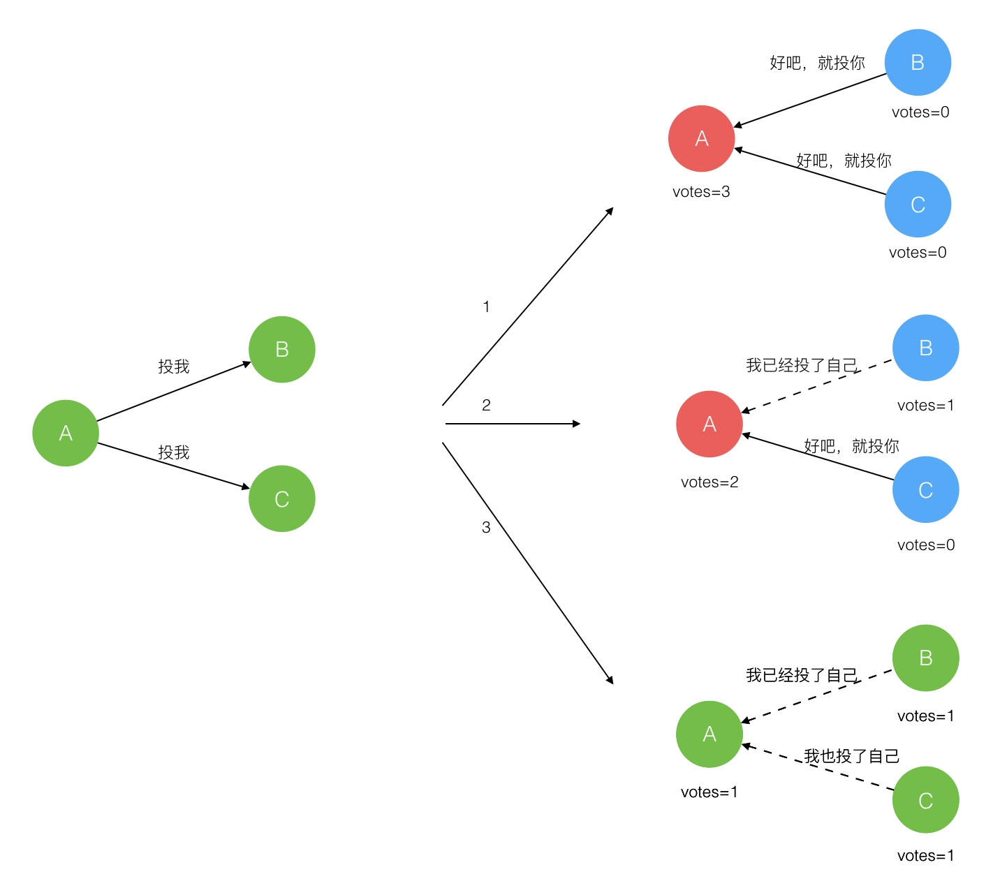

raft 参考文章
分布式系统中，网络不可靠，主机的差异性（包块性能、时钟），主机的不可靠等特性，从而产生了分布式系统的一致性问题，我们要保障分布式中的主机以同样的顺序来执行指令，从而产生一致性的结果，使得整个分布式系统像一台主机。
一致性问题
分布式系统产生一致性问题的原因可总结如下：
网络不可靠
主机不可靠
主机之间的差异性（性能、时钟等）
首先，网络可能导致我们发送的数据或者指令以乱序的方式到达，也可能会丢失数据，其次主机时不可靠的，可能会出现宕机，重启等，主机之间的差异性，包括主机的性能和时钟，这些都会导致分布式系统难于实现一致性，FLP不可能理论指出无法彻底解决一致性问题，在CAP中我们只能选择两项，大多数的分布式系统都选择了最终一致性，即若一致性来保证可用性和分区容错性。
在实际的生产环境中，一致性算法需要具备以下属性：
安全性：即不管怎样都不能返回错误的结果；
可用性：主要大部门的机器正常，就仍然可以正常工作；
不依赖时间来确保一致,即系统是异步的；
一般情况下,运行时间由大多数的机器决定,不会因为有少部分慢的机器而影响总体效率
通俗来讲，一致性的问题可以分解为两个问题：
1、任何一次修改保证数据一致性
2、多次数据修改的一致性
弱一致性：不要求每次修改的内容在修改后多副本的内容是一致的，对问题1的解决比较宽松，更多解决问题2，该类算法追求每次修改的高度并发性，减少多副本之间修改的关联性，以获得更好的并发性能。例如最终一致性，无所谓每次用户修改后的多副本的一致性及格过，只要求在单调的时间方向上，数据最终保持一致，如此获得了修改极大的并发性能。
强一致性：强调单次修改后结果的一致，需要保证了对问题1和问题2要求的实现，牺牲了并发性能。
一致性算法有：两阶段提交算法、分布式锁服务、Paxos算法和Raft算法。
两阶段提交参见这里分布式事务
分布式锁服务参加这里分布式锁以及三种实现方式
下面主要介绍Paxos算法和Raft一致性算法。
Paxos算法
Paxos算法是一个会者简单，不会者觉得很难的算法，就连Lamport本文也不得不为Paxos先后做了三次解释。
查阅了很多资料，最后发现维基百科中对Paxos的解释最为准确和易懂，可见参考文件中。这里只是阐述算法的过程和原理，不再做深一步的证明和理解。
Paxos算法分为两个简单，分别是准备阶段（Prepare）和接受阶段（Accept），当Proposer接收到来自客户端的请求时，就会进入如下流程：

Paxos算法
只要Proposer经过多数派接受，该提案就会成为正式的决议。
Raft一致性算法
Raft是Paxos的变体，不过Raft简化了Paxos，任何时间内，只有leader能够发起提案，这就涉及到leader选举问题。
Raft算法中有一下三个角色：
1.Leader：负责 Client 交互 和 log 复制，同一时刻系统中最多存在一个；
2.Follower：被动响应请求 RPC，从不主动发起请求 RPC；
3.Candidate : 由Follower 向Leader转换的中间状态。
Leader选举过程：
在极简的思维下，一个最小的 Raft 民主集群需要三个参与者（如下图：A、B、C），这样才可能投出多数票。初始状态 ABC 都是 Follower，然后发起选举这时有三种可能情形发生。下图中前二种都能选出 Leader，第三种则表明本轮投票无效（Split Votes），每方都投给了自己，结果没有任何一方获得多数票。之后每个参与方随机休息一阵（Election Timeout）重新发起投票直到一方获得多数票。这里的关键就是随机 timeout，最先从 timeout 中恢复发起投票的一方向还在 timeout 中的另外两方请求投票，这时它们就只能投给对方了，很快达成一致。

Raft 协议强依赖 Leader 节点的可用性来确保集群数据的一致性。数据的流向只能从 Leader 节点向 Follower 节点转移。当 Client 向集群 Leader 节点提交数据后，Leader 节点接收到的数据处于未提交状态（Uncommitted），接着 Leader 节点会并发向所有 Follower 节点复制数据并等待接收响应，确保至少集群中超过半数节点已接收到数据后再向 Client 确认数据已接收。一旦向 Client 发出数据接收 Ack 响应后，表明此时数据状态进入已提交（Committed），Leader 节点再向 Follower 节点发通知告知该数据状态已提交。
Leader的选举问题
分布式一致性算法与共识算法总结
经典分布式一致性算法：
2 Phase commit protocol
3 phase commit protocol
Paxos： 唯一有效的一致性算法， 其他算法都改算法的某种程度的简化版
分布式一致性算法特点：
领域： 分布式数据库
目标： 其解决的问题是分布式系统如何就某个值（决议）达成一致。
只有一种算法： paxos
特点： 无拜占庭容错， n/2 +1,
主流的传统分布式一致性算法其实只有一个：Paxos。包括Raft在内的其他算法，都属于Paxos的变种，或特定假设场景下的Paxos算法。
传统分布式一致性算法和区块链共识机制的异同点
相同点
Append only
时间序列化
少数服从多数
分离覆盖（即长链覆盖短链区块，节点大数据量日志覆盖小数据量日志）
不同点
传统分布式一致性算法并不考虑拜占庭容错，只假设所有节点仅发生宕机、网络故障等非人为问题，没有考虑恶意节点。
传统分布式一致性算法面向数据库或文件，而区块链共识机制面向交易或价值传输。
详细介绍
经典的分布式一致性算法
Paxos算法
Paxos算法是莱斯利·兰伯特（Leslie Lamport）1990年提出的一种基于消息传递的一致性算法，其解决的问题是分布式系统如何就某个值（决议）达成一致。
从工程实践的意义上来说，通过Paxos可以实现多副本一致性、分布式锁、名字管理、序列号分配等。比如，在一个分布式数据库系统中，如果各节点的初始状态一致，每个节点执行相同的操作序列，那么他们最后得到的状态就是一致的。为保证每个节点执行相同的命令序列，需要在每一条指令上执行一个“一致性算法”以保证每个节点看到的指令一致。后续又增添多个改进版本的Paxos，形成了Paxos协议家族，但其共同点是不容易工程实现。
Lamport在2011年的论文Leaderless Byzanetine Paxos中表示，不清楚实践中是否有效，考虑Paxos本身实现的难度以及复杂程度，此方案工程角度不是最优，但是系统角度应该是最好的。
- Raft算法
Paxos协议的难以理解是出了名的，斯坦福大学的博士生Diego Ongaro把对其的研究作为了自己的博士课题。2014年秋天，他正式发表了博士论文CONSENSUS: BRIDGING THEORY AND PRACTICE，并给出了分布式一致性协议的一个实现算法，即Raft。
在论文正式发表前，Diego Ongaro还把与Raft相关的部分摘了出来，形成了一篇十多页的文章In Search of an Understandable Consensus Algorithm，即人们俗称的Raft论文。
Raft算法主要注重协议的落地性和可理解性，让分布式一致性协议可以较为简单地实现。Raft和Paxos一样，只要保证n/2+1节点正常就能够提供服务；同时，Raft更强调可理解性，使用了分而治之的思想把算法流程分为选举、日志复制、安全性三个子问题。
在一个由Raft协议组织的集群中有三类角色：Leader（领袖）、Follower（群众）、Candidate（候选人）。Raft开始时在集群中选举出Leader负责日志复制的管理，Leader接受来自客户端的事务请求（日志），并将它们复制给集群的其他节点，然后负责通知集群中其他节点提交日志，Leader负责保证其他节点与他的日志同步，当Leader宕掉后集群其他节点会发起选举选出新的Leader。
共识算法
当我们描述传统分布式一致性算法时，其实是基于一个假设——分布式系统中没有拜占庭节点（即除了宕机故障，没有恶意篡改数据和广播假消息的情况）。而当要解决拜占庭网络中的数据一致性问题时，则需要一种可以容错的算法，我们可以把这类算法统称为拜占庭容错的分布式一致性算法。而共识机制，就是在拜占庭容错的分布式一致性算法基础上，根据具体业务场景传输和同步数据的通信模型。
- 工作量证明机制（Proof of Work, POW）
POW依赖机器进行数学运算来获取记账权，资源消耗相比其他共识机制高、可监管性弱；同时，每次达成共识需要全网共同参与运算，性能效率比较低，容错性方面允许全网50%节点出错。第一个运用POW的是比特币系统，它能够使更长总账的产生具有计算性难度，平均每10分钟有一个节点找到一个区块
- 股权证明机制（Proof of Stake, POS）
股权证明机制已有很多不同变种，但基本概念是产生区块的难度应该与用户在网络里所占的股权成比例
- 授权股权证明机制（DPOS）
每个股东可以将其投票权授予一名代表，获票数最多的前100名代表按既定时间表轮流产生区块。所有代表将收到等同于一个平均水平的区块所含交易费的10%作为报酬，如果一个平均水平的区块含有100股作为交易费，则一名代表将获得1股作为报酬。
该模式每30秒便可产生一个新区块，在正常的网络条件下区块链分叉的可能性极小，即使发生也可以在几分钟内得到解决。
- 实用拜占庭协议（PBFT）
PBFT是一种基于消息传递的一致性算法，算法经过三个阶段达成一致性，这些阶段可能因为失败而重复进行。
假设节点总数为3f+1，f为拜占庭错误节点：
（1）当节点发现leader作恶时，通过算法选举其他的replica为leader；
（2）leader通过pre-prepare 消息把它选择的value广播给其他replica节点，其他replica节点如果接受则发送 prepare，如果失败则不发送；
（3）一旦2f个节点接受prepare消息，则节点发送commit消息；
（4）当2f+1个节点接受commit消息后，代表该value值被确定。
b6b2c783ac6f4c0687543a5fc82fa405_th.jpg.png
该算法主要应用在hyperledger fabric等联盟区块链或私有区块链场景中，容错率低、灵活性差，超过1/3的节点作恶就会导致系统崩溃，并且不可动态添加节点（部分论文讨论了动态节点的PBFT算法，但是理论和实践上都有比较强的假设条件）。
- GEAR共识协议（Group Estimate and Rotate）
该协议是唐盛（北京）物联技术有限公司自主研发的共识协议，通过轮转记账（rotate）、集体评估（group estimate）和齿轮共识路由（gear）三个子协议组成，结合区块链数据结构和点对点网络通信的特点，实现安全、高效、去中心化、应用场景灵活的数据同步共识。目前，该协议已经在“唐盛链”中得到应用。
协议的参与者包括轮转见证人（rotate witness）、一级集体评估人（voter）、二级集体评估人（valuer）。Voter作为接入共识网络的用户，既是系统的使用者也是一级集体评估人，按照其所持代币加权评估选举出轮转见证人，轮转见证人按照等概率轮流记账（产生区块）。二级集体评估人是在评估事件发生时由轮转见证人转化而来，通过加权平均的接近率抢夺一次记账机会
作者：millerix
链接：https://www.jianshu.com/p/9a9290fb0727
来源：简书
著作权归作者所有。商业转载请联系作者获得授权，非商业转载请注明出处。
容灾【备份】
原文链接https://juejin.im/post/5d2030616fb9a07eea3292f1
本文是Fault-Tolerant VM论文的阅读笔记。本文实现了一个容错虚拟机，在另外一个服务器上备份主虚拟机的运行。可以有两种实现思路：
备份全部状态的变化到备份虚拟机（包括CPU、内存、I/O设备）。但是，这样一来需要传输处理的数据内容将十分巨大。
将虚拟机视为确定状态机，这是本文的方法。只需要初始状态和确定的输入，以及记录一些不确定事件即可完成备份。
VMware已经在vSphere中实现了本文的虚拟机备份机制，能够在主虚拟机发生故障之后无缝启用备份虚拟机。目前这个技术只支持单核处理器，因为多核处理器指令访存也是不确定的事件。当然，本文实现的备份机制奏效的前提是故障在被外部发现之前都能被检测到。
基础的容错设计
一个容错的配置如下图所示，对于一台虚拟机（主虚拟机）而言，我们在其他物理服务器上运行一台备份虚拟机，两台主机处于虚拟锁步状态。它们会连接到同一个共享磁盘。其中，所有的输入（包括网络、鼠标、键盘等等）只会交给主虚拟机，然后通过日志信道发送给备份虚拟机。

确定回放实现
复制虚拟机的运行主要面临三个挑战：
正确地捕获所有的输入和必要的不确定事件来保证备份虚拟机的确定运行，
正确地将输入和不确定性应用到备份虚拟机
保证不降低性能
不过，VMware vSphere已经提供了VMware确定回放[2]功能。
容错协议
输出要求：如果备份虚拟机在故障之后替代了主虚拟机，备份虚拟机运行期间要保证外界得到的输出是完全一致的。
复制代码
只有满足了输出要求，外界才不会观测到故障的发生，而这个要求需要延迟外部输出直到备份虚拟机收到足够的信息来重放输出操作。一个必要的条件就是备份虚拟机需要收到输出操作之前的所有日志。备份虚拟机不能在输出操作之前上线，因为可能主虚拟机中会存在不确定事件取消了后续的输出。
输出规则：主虚拟机不会将输出发送给外界，直到收到了来自备份虚拟机收到产生输出的操作的日志的确认。
复制代码
容错协议如下图所示，异步事件、输入和输出操作发送给了备份虚拟机，主虚拟机只有在备份虚拟机确认收到输出操作后输出。

不过协议无法保证重复输出，因为备份虚拟机无从知晓主虚拟机在输出之前还是之后崩溃，另外故障发生时发送给主虚拟机的包也会丢失。不过好在，网络基础设施、操作系统、应用程序通常都能处理丢包或者重复的情况。
故障检测和响应
在备份虚拟机取代主虚拟机之前，需要应用全部的日志。主虚拟机和备份虚拟机主要通过心跳包和日志通信来判断对方是否故障。为了解决脑裂问题，两个虚拟机需要通过共享磁盘上得知对方是否故障。如果主虚拟机故障，那么备份虚拟机取代主虚拟机，并创建一个新的备份虚拟机；如果备份虚拟机故障，那么创建一个新的备份虚拟机。
容错实现实践
启动和重启容错虚拟机
在启动主虚拟机或者备份虚拟机故障后，需要创建一个和主虚拟机相同状态的备份虚拟机，并且不能打断主虚拟机的运行。具体通过VMware VMotion实现，VMotion将虚拟机复制到另外一个物理服务器上，将源虚拟机作为主虚拟机，将目标虚拟机作为备份虚拟机。
备份虚拟机通常位于集群中另外一台服务器上，由vSphere调度选择放置的服务器，这些服务器能够访问共享的磁盘。
管理日志信道：
日志信道可以通过一个大的缓冲来实现，必要的时间可以控制主虚拟机的运行速度来保证备份虚拟机能够赶上。

容错虚拟机的操作
虚拟机会有各种各样的控制操作，例如关机、修改资源分配，这些其实都可以通过特殊的控制操作日志来实现。
容错机制给VMotion带来了挑战，VMotion用来无缝迁移虚拟机，要求在切换的时候挂起所有磁盘I/O。主虚拟机可以挂起磁盘I/O，但是备份虚拟机重复主虚拟机的，需要通过日志信道请求主虚拟机挂起磁盘I/O。
磁盘I/O实现中的问题：
实现磁盘I/O会面临以下问题
磁盘操作是非阻塞的，所以可以并行写入，但是由此引入了不确定性。解决方案是强制磁盘操作串行进行。
磁盘操作（DMA）和应用程序会并行操作同一块内存，引发数据竞争。解决方案是使用额外缓冲，读取磁盘时先将数据读入额外缓冲，写入磁盘时先将数据复制到额外缓冲。
当主虚拟机故障，备份虚拟机替代时，磁盘I/O可能没有完成。解决方案是重新执行磁盘操作，因为前两个方案已经避免了数据竞争，因此磁盘操作是可重入的。
网络I/O实现中的问题：
vSphere实现了一些网络方面的优化，例如直接从网络缓冲区取走数据，而不通过陷阱，但是这将带来不确定，因此需要禁用这个优化。另外也做了以下优化：
通过批量操作降低虚拟机陷阱和中断次数。
降低传输数据包的延迟：将发送操作和接收操作注册到TCP协议栈之中，保证立即发送和接收日志。
设计中的选择
是否共享磁盘
主虚拟机和备份虚拟机其实可以采用独立的磁盘，磁盘是内部存储，所以不需要满足输出要求，但是两个磁盘需要在启动容错之初进行同步。不过，这是脑裂问题就不能通过磁盘解决了，需要通过第三方协调服务器。

在备份虚拟机中执行磁盘读取操作
备份虚拟机也可以考虑直接从磁盘读取数据而不需要通过日志信道。但是这会导致备份虚拟机变慢，因为需要等待磁盘读取操作，并且需要处理读取故障，以及推迟写入操作保证之前的读取操作被备份服务器成功执行。
容灾【备份】
原文链接：http://blog.luoyuanhang.com/2017/05/20/ftvm-notes/
在分布式系统中，容错方法有很多种，常见的传统方法有：主/副服务器方法（当主服务器宕机之后，由副服务器来接管它的工作），这种方法通常需要机器之间的高带宽。
另外还有确定（deterministic）状态机方法：将另一台服务器初始化为和主服务器一样的状态，然后让它们都接受到同样的输入，这样它们的状态始终保持一致，但是这种方法对于非确定的（non-deterministic）操作并不适用。
本文中讨论的方法是使用虚拟机作为状态机，它具有以下优点：
操作全部被虚拟化
虚拟机本身就支持 non-deterministic 操作
虚拟机管理程序（Hypervision）能够记录所有在虚拟机上的操作，所以能够记录主服务器（Primary）所有操作，然后在副服务器（Backup）上进行演绎
基本设计方案
如图就是本文提到的容错系统的架构，一个 Primary，一个 Backup，Primary 和 Backup 之间通过 Logging Channel 进行通信，Primary 和 Backup 基本保持同步，Backup 稍稍落后，它们两个之间会通过 heartbeat 进行 fail 检测，并且它们使用共享磁盘（Shared Disk）。
确定（deterministic）操作的演绎
让两台机器初始状态相同，它们接受相同的输入，顺序相同，两台机器执行的任务的结果就会相同。
但是如果存在非确定的（non-deterministic）操作（比如中断事件、读取CPU时钟计数器的值操作就是非确定的），它会影响状态机的执行。
难点在于：
需要捕捉全部的输入和 non-deterministic 操作在保证 Backup 是deterministic 的
需要准确将全部输入和 non-deterministic 操作应用到 Backup 中
需要保证系统高效
设计方案为：将所有的 input 和 non-deterministic 操作写入到 log 中（file），对于 non-deterministic 操作还要记录和它相关的状态信息等，确保 non-deterministic 操作后Backup状态还是和 Primary 一致
FT（Fault-Tolerance）协议
FT 协议是应用于 logging channel 的协议，协议的基本要求为：
如果 Primary 宕机了，Backup 接替它的工作，Backup 之后向外界发出所有的 Output 要和 Primary 原本应当发送的一致。
为了保证以上的要求，设计如下系统：
Primary会在所有关于本次Output 的所有信息都发送给 Backup 之后（并且要确保 Backup 收到）才会把 output 发送给外界
Primary 只是推迟将 output 发送给外界，而不会暂停执行后边的任务
流程如图所示：
但是这种方法不能保证 output 只发出一次，如果 primary 宕机了，backup 不能判断它是在发送了 output 之前还是之后宕机的，因此 backup 会再发送一次 output。但是这个问题很容易解决，因为：
output 是通过网络进行发送的，例如 TCP 之类的网络协议能够检测重复的数据包
即使 output 被发送了2次其实也没关系。如果 output 是一个写操作，它会在同一个位置写入两次，结果不会发生变化；如果 output 是读取操作，读的内容会被放入 bounce buffer（为了消除 DMA 竞争），数据会在 IO 中断之后被送到
宕机检测
如何知道有机器宕机，在该系统中是十分重要的。该设计使用的是UDP heartbeat 机制来检测 Primary 与 Backup 之间的通信是否正常。
但是使用这种方法会存在裂脑问题（split-brain，Primary 和 Backup 同时宕机），该怎么解决呢？
该设计中使用了共享存储（Shared Storage），对它的操作是原子的，Primary 和 Backup不能同时进行一个操作（提供原子的 test-and-set 操作）
如果检测出 Primary 宕机，Backup 会成为 Primary，接替之前的工作，然后再寻找一个 Backup。
具体实现
启动/重启 Virtual Machine
如何启动一个和 Primary 状态一样的 Backup？
VMware Vmotion 操作能够将一台 VM 从一个 Server 完整的迁移到另一个 Server（只需要很短的中断），在该设计中的方法对 Vmotion 做了一点修改，不是进行迁移，而是直接克隆。
管理 Logging Channel
如图，该设计使用了一个大的 buffer，来保存 logging entries，Primary 把自己的 entry 存到 buffer 中，由 logging channel 发送给Backup 的 buffer，然后 Backup 从 buffer 读取命令执行。
如果 Backup 的 buffer 空了，没有命令执行了，Backup 会等待新的 entry
如果 Primary 的 buffer 满了，Primary 会等待，等 buffer 中有空余空间再继续执行
Disk I/O问题
disk 操作是并行的，同时对 disk 的同一位置进行操作会导致 non-deterministic
解决方案：检测 IO 竞争，使这些操作串行执行
Disk IO 使用 DMA（Direct Memory Access），同时访问内存同一位置的操作会导致 non-deterministic
解决方案：对 disk 操作的内存设置内存的页保护，但是这种方法代价太高；该设计中使用了 bounce buffer，它的大小和 disk 所操作的内存部分大小是一致的，read 操作直接将内容读入 buffer，当其他操作完成，写入内存，write 操作将写内容写入 buffer，之后再写入磁盘。
总结
Vmware 提出的这种 Primary/Backup 方法是分布式容错方法中非常重要的一部分，可以用在许多系统中，不仅仅是分布式存储（GFS 的容错方法），也可以用在分布式计算中，因为它是将所有的操作都记录下来，将它们重新在 Backup 上进行演绎，从而起到了备份的作用，能够做到容错（Fault-Tolerance）。
Copyright © 2015 Powered by MWeb, Theme used GitHub CSS.